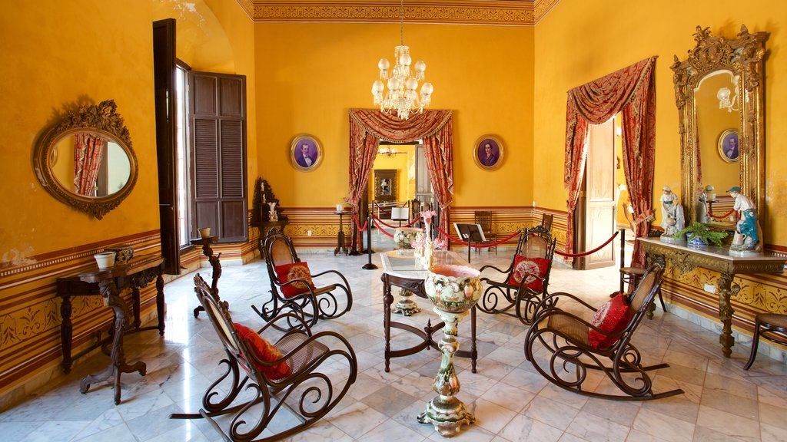

Historia
El 4 de octubre de 1540, Campeche fue la primera villa fundada por los españoles en la península de Yucatán. Antes de la conquista española, el área que actualmente ocupa Campeche estuvo poblada por la civilización maya.

Escudo
El escudo de armas de la ciudad de San Francisco de Campeche, le fue otorgado en 1777 por el rey de España Carlos III. Está compuesto por cuatro cuarteles: dos con castillos en campo de gules y dos con galeones en campo de azur, todo el escudo esta orlado con el cordón de San Francisco y la corona real por servicios prestados.

Localización
Limita al norte con el municipio de Tenabo, al este con el municipio de Hopelchén, al sur con el municipio de Champotón y al oeste con el Golfo de México, que posee un litoral de 60 Km. Geográficamente se ubica entre los paralelos 19° 14' y 20° 00' de latitud norte, y entre los meridianos 89° 50' y 90° 42' de longitud oeste de Greenwich

Gastronomia
Estos son unos de los platillos tipos de campeche es el chocolomo, pan decazón, camarones al coco, puchero y manitas de cangrejo entre otros.

Lugares Turísticos
Uno de los lugares turiticos seria la CASA DE LA CULTURA NO. 6.
